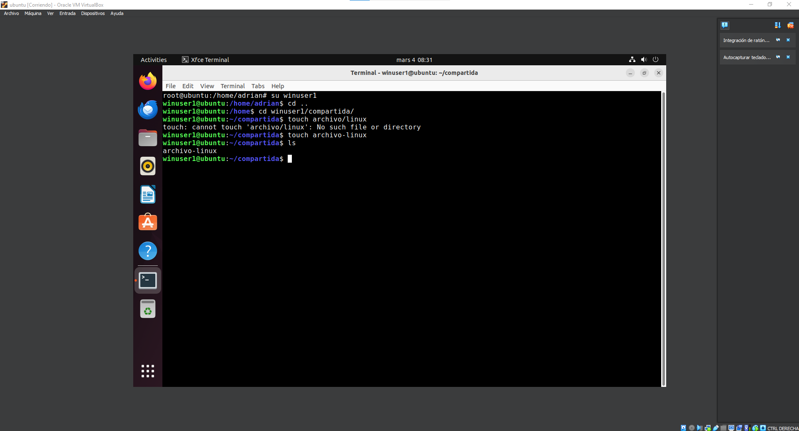

Maquina de Ubuntu
Primero instalamos la terminal en la maquina que preferamos en la maquina de ubuntu.
Despues de instalar la terminal, comenzamos escribiendo un su, tras poner la contraseña ponemos apt upgrade y luego apt update para actualizar la maquina.

Para comenzar con la descarga de virtualbox lo primero que debe hacer es clickar en la imagen que aparece en la esquina derecha de la pagina, la cual te manda directamente a la pagina de descarga del programa. Una vez que estas en la pagina lo primero que debe hacer es fijarte en el sistema operativo que tienes, y luego te dirigues al apartado que sale rodeado en la imagen que te aparece debajo de esta explicación
Tras haber actualizado la maquina el siguiente paso es instalar samba.

Despues de instalar samba, procedemos a crear un nuevo usuario, el cual vamos a usar para conectarnos y compartir los documentos.
Luego con el su nos logeamos en el nuevo usuario, y vamos a su carpeta personas y creamos una carpeta compartida usando el comando mkdir compartida, y luego de crearla le damos permisos.
Instalamos vim con el comando apt-get install vim, una vez instalado, como root editamos el archivo de Configuración usando el comando Vim/etc/samba/smb.conf y despues al final de vim escribimos todo lo que aparece en la imagen.

Tras haber escrito lo anteriormente mostrado pulsamos escape y escribimos :wq.

En este paso lo que debemos hacer es añadir el winuser1 a los usuarios de samba y luego le ponemos contraseña y para eso usaremos el comando smbpasswd -a winuser1.

Luego nos volvemos a cambiar al usuario winuser1 para crear archivos dentro de la carpeta compartida, añadiendo los comandos que aparecen en la imagen.
Por ultimo para terminar con los pasos nos quedaría resetear el servicio samba desde el root para eso primero usamos el comando su para movernos y luego, systemctl restart smbd.service y ya estarían todos los pasos de la Configuración de ubuntu.